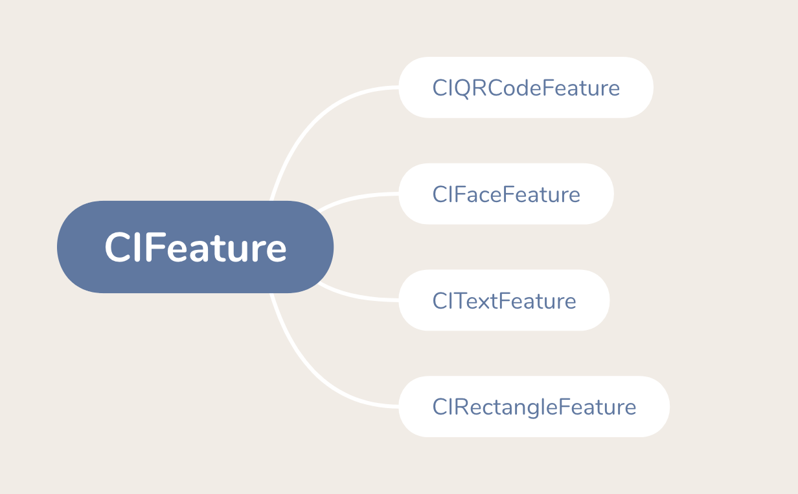

图像特征CIFeature
CIFeature 继承自NSObject，表示在图像中检测到的显着特征的对象的抽象超类；它的子类包含该特征的附加信息。
| 只读属性 | 数据类型 | 描述 |
|---|---|---|
type |
NSString |
发现的特征类型。 |
bounds |
CGRect |
已发现特征位于图像中的坐标。 |

1、条码信息CIQRCodeFeature
CIQRCodeFeature 有关在静止图像或视频图像中检测到的二维码或条形码信息。
QR码是使用ISO / IEC 18004：2006标准的二维条形码。该对象的属性标识图像透视图中条形码的角，并提供已解码的消息。
要检测图像或视频中的QR代码，在初始化CIDetector对象时选择CIDetectorTypeQRCode类型。
| 只读属性 | 数据类型 | 描述 |
|---|---|---|
bounds |
CGRect |
图像中特征的坐标位置和范围。该属性标识包含检测到的条形码的图像的矩形区域，不一定是条形码的形状。检测到的条形码在空间中是矩形的，但可能在图像中以透视方式出现；使用在识别检测到的条码的角时列出的属性来查找在透视图中显示的条码的角。 |
messageString |
NSString |
从检测到的条形码解码的字符串 |
symbolDescriptor |
CIQRCodeDescriptor |
包含有效载荷，符号版本，掩码模式和纠错级别，因此可以复制QR码 |
topLeft |
CGPoint |
位于图像坐标中，检测到的条形码的左上角 |
topRight |
CGPoint |
位于图像坐标中，检测到的条形码的右上角 |
bottomLeft |
CGPoint |
位于图像坐标中，检测到的条形码的左下角 |
bottomRight |
CGPoint |
位于图像坐标中，检测到的条形码的右下角 |
2、人脸信息 CIFaceFeature
CIFaceFeature 有关在静止图像或视频图像中检测到的人脸信息；该对象提供面部、眼睛、嘴巴的信息。
视频中的面部对象还可以具有跟踪其在时间跟踪ID和帧计数上的位置的属性。
2.1、找到面孔
| 只读属性 | 数据类型 | 描述 |
|---|---|---|
bounds |
CGRect |
图像中面部的坐标位置和范围。 |
hasFaceAngle |
BOOL |
有关面部旋转的信息是否可用。 |
faceAngle |
float |
脸部的旋转；以度为单位逆时针测量旋转；零表示眼睛之间绘制的线相对于图像方向是水平的。 |
2.2、识别面部特征
| 只读属性 | 数据类型 | 描述 |
|---|---|---|
hasLeftEyePosition |
BOOL |
是否找到了面部的左眼 |
hasRightEyePosition |
BOOL |
是否找到了面部的右眼 |
hasMouthPosition |
BOOL |
是否找到了面部的嘴 |
leftEyePosition |
CGPoint |
图像中左眼坐标 |
rightEyePosition |
CGPoint |
图像中右眼坐标 |
mouthPosition |
CGPoint |
图像中嘴的坐标 |
hasSmile |
BOOL |
是否在面部中检测到笑脸；使用检测器查找面部时需要设置CIDetectorSmile为YES。 |
leftEyeClosed |
BOOL |
是否在面部中检测到闭合的左眼；使用检测器查找面部时需要设置CIDetectorEyeBlink为YES。 |
rightEyeClosed |
BOOL |
是否在面部中检测到闭合的右眼；左、右是相对于原始（非镜像）图像方向，而不是与眼睛所有者相关。 |
2.3、跟踪视频中的不同面孔
| 只读属性 | 数据类型 | 描述 |
|---|---|---|
hasTrackingID |
BOOL |
CIFaceFeature是否具有trackingID。 |
trackingID |
int |
CIFaceFeature的标识符；CoreImage为在视频流中检测到的面部提供trackingID，可以使用该标识符来识别在一个视频帧中检测到的CIFaceFeature对象何时与先前视频帧中检测到的相同面部。只要面部在框架中并且不与特定面部相关联，该标识符就会持续存在；换句话说，如果面部移出视频帧并稍后返回到帧中，则分配另一个ID。 |
hasTrackingFrameCount |
BOOL |
CIFaceFeature是否具有trackingFrameCount。 |
trackingFrameCount |
int |
面部的跟踪框数。 |
3、文本信息CITextFeature
CITextFeature 有关可能包含静止图像或视频图像中检测到的文本的区域的信息。使用此类可以定位图像中的文本区域：例如，在执行自己的光学字符识别或其他处理任务之前，提取并透视校正图像的这些部分。
要检测图像或视频中的矩形，在初始化CIDetector对象时选择CIDetectorTypeText类型，并使用CIDetectorImageOrientation选项指定查找直立文本的所需方向。
| 只读属性 | 数据类型 | 描述 |
|---|---|---|
bounds |
CGRect |
图像中文本区域的坐标位置和范围。 |
subFeatures |
NSArray |
包含特征中检测到的其他特征的数组。文本检测器可以识别可能包含文本的主要区域以及该区域内可能包含单个文本特征的区域；这些功能可能是单个字符，密集字符组或整个单词。只有在检索功能时启用CIDetectorReturnSubFeatures选项，CoreImage才会填充此数组。 |
topLeft |
CGPoint |
位于图像坐标中，检测到的文本区域的左上角 |
topRight |
CGPoint |
位于图像坐标中，检测到的文本区域的右上角 |
bottomLeft |
CGPoint |
位于图像坐标中，检测到的文本区域的左下角 |
bottomRight |
CGPoint |
位于图像坐标中，检测到的文本区域的右下角 |
4、矩形区域CIRectangleFeature
CIRectangleFeature 关于在静止图像或视频图像中检测到的矩形区域的信息。检测到的矩形特征在图像平面中不一定是矩形的; 在空间中该特征识别可以是矩形但在图像中以透视方式出现的形状：例如，桌子上的纸或书。
例如，可以将矩形特征检测与CIPerspectiveCorrection过滤器一起使用，以检测图像或视频中的矩形对象，并将它们转换为原始方向。
要检测图像或视频中的矩形，在初始化CIDetector对象时选择CIDetectorTypeRectangle类型，并使用CIDetectorAspectRatio和CIDetectorFocalLength选项指定要搜索的矩形要素的近似形状。探测器最多返回一个矩形特征，这是图像中最突出的特征。
| 只读属性 | 数据类型 | 描述 |
|---|---|---|
bounds |
CGRect |
图像中矩形区域的坐标位置和范围。 |
topLeft |
CGPoint |
位于图像坐标中，检测到的文本区域的左上角 |
topRight |
CGPoint |
位于图像坐标中，检测到的文本区域的右上角 |
bottomLeft |
CGPoint |
位于图像坐标中，检测到的文本区域的左下角 |
bottomRight |
CGPoint |
位于图像坐标中，检测到的文本区域的右下角 |